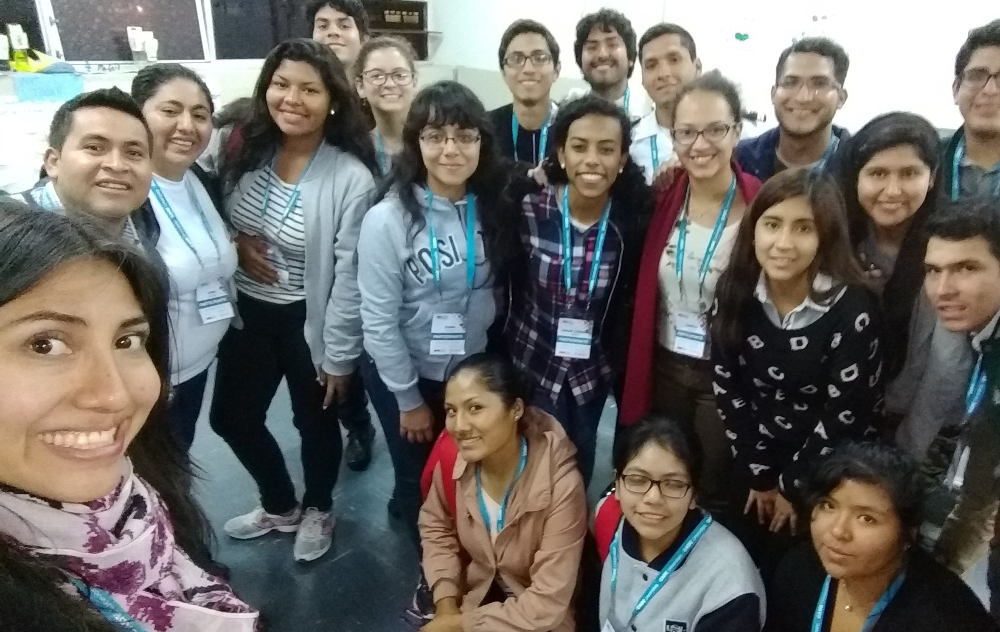
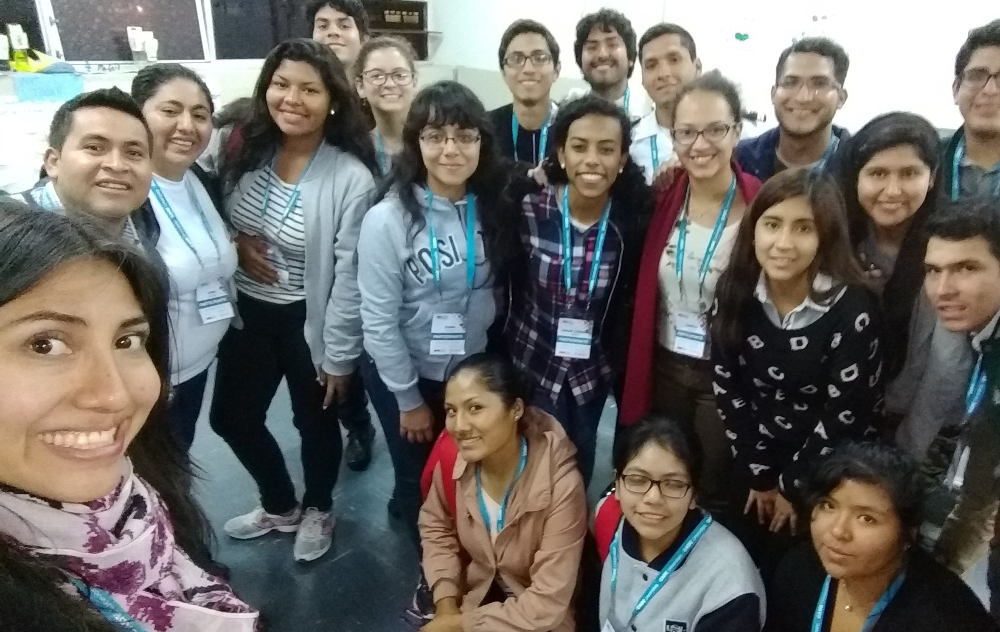

Melody Durand Silva
melody.durand.silva@gmail.com
¡Bienvenido! Soy una profesional apasionada por la gestión innovadora de proyectos. Constantemente identifico problemas para el desarrollo de proyectos y propongo soluciones integrales enfocadas en las personas, los procesos y la tecnología.
Soy especialista en sistemas de la información e ingeniería industrial colegiada con diplomados en gestión de proyectos y asociaciones público privadas. Tengo más de 6 años de experiencia gestionando proyectos, con especial orientación en los procesos de ideación, planificación y control.
También soy tutor docente del curso de Procesos para Ingeniería en la Universidad Tecnológica del Perú (UTP).
Además, en mi tiempo libre, me gusta apreciar el arte, la fotografía, bailar marinera, correr al aire libre, viajar y conocer nuevas culturas a través de las personas.
Estoy convencida que es posible hacer un mundo mejor con innovación y compromiso, y eso me motiva a trabajar con ese fin.
Herramientas
Investigación
Diagrama de secuencia
Arquitectura de la información
Análisis de datos
Flujos de usuario
Grupos focales
Entrevistas a profundidad
Ideación
Diagrama de afinidad
Mapa de experiencia
Design thinking
Lluvia de ideas
Storytelling
Arquetipo
Gestión
Herramientas de calidad
Seguimiento de avances
Mejora continua
Mentoría
Coaching
CANVAN
PMBOK
SCRUM
Testing
Prueba de esfuerzo (estrés)
Prueba de desempeño
Pruebas de usabilidad
Prueba funcionalidad
Portafolio


Referencias
“ Melody es una profesional muy competente, confiable y eficiente, fue una participante clave en el desarrollo de varios procesos y herramientas de gestión, liderando algunos de ellos, que actualmente se utilizan en nuestro departamento. Estos han ayudado a casi duplicar los resultados del departamento en los últimos tres años. Recomiendo encarecidamente a Melody y estoy seguro de que será un miembro valioso y agregará valor a su próxima experiencia ”.
“ Melody es una profesional hábil, de muchos aportes y comprometida con la labor y la empresa. Siempre la percibí apasionada con lo que hace, no solo inteligente sino capaz de compartir sus habilidades y demuestra mucha creatividad en sus aportes, propuestas de solución y cooperación en general ”.
“ Trabajé con Melody hace algunos años y recomiendo su trabajo ”.
Ejecutivos con los que he trabajado dicen:
“ Melody busca maneras de hacer mejor las cosas. Detectó una oportunidad de mejora en otra área; y aparte de sus funciones, investigó al respecto y presentó un proyecto de innovación para ayudar a esa área. Las principales cualidades de Melody, y que creo la hacen muy valiosa , son su gran disponibilidad para trabajar en equipo, su facilidad para relacionarse con personas y su proactividad ”.
“ Melody es una persona muy comprometida, con muy buena actitud, siempre buscaba seguir aprendiendo y colaborar con todo el equipo ”.
“ Melody es una excelente profesional...Conozco a Melody desde el año 2010, laborando en otras áreas,mostrando siempre como principal característica su espíritu de trabajo en equipo e innovación. Nos ayudó con múltiples iniciativas y programas de mejoras en el área, y sobre todo con el emprendimiento de automatizar nuestros reportes e informes de resultados y cumplimiento. No tengo la menor duda que Melody seguirá logrando sus objetivos y conseguirá siempre destacar en los encargos que reciba por su gran profesionalismo ”.
Servicios
Me interesan los proyectos de innovación y mejora de procesos, orientados a mejorar la experiencia del usuario, incrementar la rentabilidad de la compañía y/o tener un impacto positivo en la sociedad.
Funciones
Coordinadora de proyectos
Coordinadora de mejora de procesos
Scrum Master
Product Owner
Consultor en proyectos de mejora
Facilitadora en talleres de innovación, metodologías ágiles y/o habilidades blandas
Sectores de interes
Banca
Consumo masivo
Educación
Minería
Tecnología
Telecomunicaciones
Eventos y talleres
Los eventos en los que participo representan para mí espacios de aprendizaje que impulsan nuevos enfoques para mejorar la gestión de proyectos, tarea en la que me he especializado como profesional.
Compartir conocimiento sobre metodologías agiles, herramientas para la gestión de proyectos y el desarrollo de habilidades blandas se ha vuelto para mí en un manera de impactar positivamente en la vida de otras personas y en su desarrollo profesional.
Estas experiencias me han permitido aprender de forma constante sobre diversas industrias y culturas, siempre orientada a proveer soluciones innovadoras y sostenibles para resolver problemas reales.
✔️Video de presentación ASQ - UTP, profesionaes apasionados por la calidad en la Universidad Tecnológica del Perú
✔️Video de visita a las instalaciones de Crack de Code, centro de capacitación en programación

Ponente - Workshop innovación

Ponente - Taller de innovación en la PMO

Facilitadora - taller de habilidades blandas

Ponente - taller de liderazgo transformador

Facilitadora - Design thinking

Ponente - IEEE Womeng UTP
CERTIFICACIONES Y RECONOCIMIENTOS
Mi mayor satisfacción es ser parte de la solución, busco proponer ideas innovadoras e implementarlas para generar un impacto positivo. Con cada nuevo reconocimiento recibido, siento gran satisfacción solo por los resultados de mi trabajo, sino aún más por ver cómo un problema se convierte en una oportunidad para mejorar la experiencia del usuario.
- Colegiatura en Ingeniería Industrial
- SCRUM Foundations Professional Certificate
- SCRUM Master Professional Certificate

Reconocimiento del público - Desafío CADE universitario

Reconocimiento a la innovación
Primer puesto en el concurso de Innovación
CONTACTO
¿Interesado en gestión de proyectos, mejora de procesos y soluciones innovadoras? ¡Conversemos! Juntos podemos generar un impacto positivo aún mayor.


 
